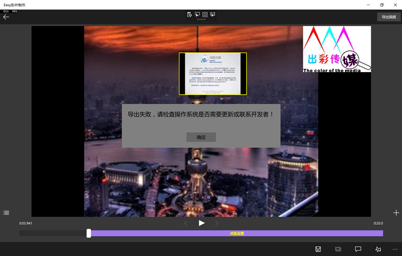

导出视频时会出现失败的情况。

图1：导出视频失败
失败的原因可能有以下几种：
一、由于硬件的配置问题，无法转码高清晰格式的视频（比如1080P、2K、4K）。
解决方案：降低分辨率然后重新导出。
二、由于加载的特效过多，所需的内存超过了应用的最大限额（Window商店应用有内存上限，峰值由设备的物理内存决定）
解决方案：减少一些效果或镜头，分成两次或多次完成视频编辑工作。
三、系统比较繁忙或者有推送的更新没有安装。
解决方案：关闭一些程序，通过系统设置里的“更新和安全”安装最新的更新，重启后再打开应用导出视频。
四、导入的视频或音频格式不兼容。
解决方案：通过转码工具将视频或音频转码为标准格式。